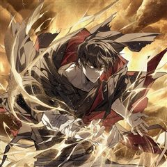
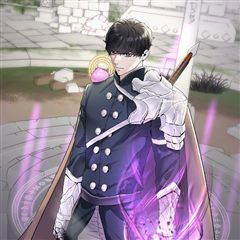
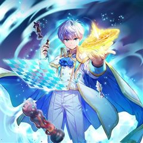
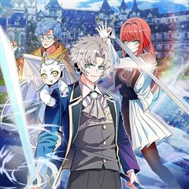
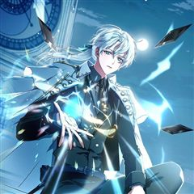
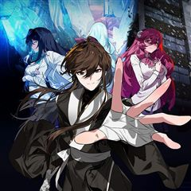

블랙 베히모스 같은 웹툰 추천

블랙 베히모스 · 케이지콘
블랙 베히모스 재밌게 봤다면 이 웹툰들도 좋아할 거예요. 같은 장르이면서 학원물, 성장물 같은 요소가 겹치는 작품을, 겹치는 요소가 많은 순서로 20개 골랐어요.
2026-10-07 기준 · 네이버웹툰·카카오웹툰·레진코믹스 · 성인 작품 제외
내 취향으로 직접 골라 추천받기 →-
1
 카카오웹툰
카카오웹툰무한의 마법사
마굿간에 버려져 평민으로 키워진 아이, 시로네. 타고난 통찰력으로 글까지 깨우친 아이는 도시로 나간 어느 날 그토록 궁금해하던 마법을 경험한다. 그 길로 마법사를 꿈꾸게 된 시로네. 하지만 신분의 장벽이 두터운 이 곳은 아이에게 냉혹하고, 그는 채…
학원물성장물판타지카카오웹툰에서 보기 → · 무한의 마법사 같은 웹툰 → -
2
 카카오웹툰
카카오웹툰만렙 플레이어의 100번째 회귀
전세계적으로 15세부터 29세는 무조건 참가해야 하는 총 20라운드의 데스게임. 이 게임에 회귀특성으로 100번째 도전을 시작하게 된 주인공이 99번의 경험으로 얻은 정보를 이용해 남들보다 압도적으로 강해지는 사이다물. 마지막 라운드의 조건이 최소…
학원물성장물판타지카카오웹툰에서 보기 → · 만렙 플레이어의 100번째 회귀 같은 웹툰 → -
3
 카카오웹툰
카카오웹툰소설 속 엑스트라
"나는 누구지?" 이 세상은 내가 쓴 소설. 그러나 나는 단 한 번도 쓴 적 없는 인물이 되었다. 얼굴은 물음표에다, 소설 속 그 누구와도 접점이 없는, 아무도 기억 못할 그런 인물. 영웅 아카데미에 입학한 엑스트라, 아니 소설 속 먼지가 살아남는…
학원물성장물판타지카카오웹툰에서 보기 → · 소설 속 엑스트라 같은 웹툰 → -
4
 카카오웹툰
카카오웹툰권왕전생
인간들이 이종족을 노예로 부리는 세상. 대마도사 '레펜하르트'는 이종족들을 돕는다는 이유로 인간들에게 마왕 취급을 받는다. 마왕을 토벌하기 위해 온 용사 일행! '레펜하르트'는 그에 맞서 용사 일행에게 큰 피해를 주는 것에 성공하지만, 결국 권왕 '…
학원물성장물판타지카카오웹툰에서 보기 → -
5
 카카오웹툰
카카오웹툰네크로맨서 학교의 소환천재
네크로맨서 진영과 프리스트 진영의 '100년 전쟁' 이후. 힘의 구도를 뒤바꿀 역대급 인재가 태어났다. 무엇을 상상하던 그 이상의 잠재력. 아버지의 언데드 군단을 손에 넣고, 대륙을 양분하는 위대한 네크로맨서 학교 '키젠'에 입학한다. 엘리트들 사이…
학원물성장물판타지카카오웹툰에서 보기 → -
6
 네이버웹툰
네이버웹툰달로 만든 아이
어린 시절부터 남들이 보지 못하는 존재들을 볼 수 있던 '박하'. 평생을 외롭게 살아온 박하는 18살이 되던 해, 처음으로 자신과 같은 것을 볼 수 있는 '진도'와 그의 친구들을 만나게 된다. 어느 날, 진도를 통해 박하가 과거에 영물들을 군림했던…
학원물성장물판타지네이버웹툰에서 보기 → -
7
 카카오웹툰
카카오웹툰99대장
호랑이의 심장을 가지고 태어난 주인공 나선욱은 사고뭉치였으나 부모님의 소원으로 자신의 강함을 숨기고 오로지 졸업을 목표로 외진 곳에 위치한 조용할 줄 알았던 학교 “국양고등학교”로 전학을 가게 된다. 그러나 그곳은 다양한 꼰대 문화와 위험한 인물들이…
학원물성장물판타지카카오웹툰에서 보기 → -
8
 카카오웹툰
카카오웹툰뱀파이어 로드로 사는 법
반년간의 도주 생활 끝에 결국 성기사의 명성을 위한 제물로 살해당한 뱀파이어 유진. 후회 속에서 삶을 마감한 그에게 회귀라는 기회가 찾아왔다. “절대로 또 그렇게 죽진 않을 거다. 정말 과거로 돌아온 거라면, 무슨 수를 써서라도……. 두 번 다시 후…
학원물성장물판타지카카오웹툰에서 보기 → -
9
 카카오웹툰
카카오웹툰방구석 여포
방구석에서만큼은 천하무쌍! 찐따고딩 여포의 숨겨진 능력이 깨어난다! 인터넷에서 '적토마18'로 활동 중인 고등학생 여포. 악명높은 키보드 워리어인 그는 '슈퍼베어'라는 유저와 키보드 배틀을 벌이다가 다니는 학교를 적는 실수를 하게 된다. 선망의 대상…
학원물성장물판타지카카오웹툰에서 보기 → -
10
 카카오웹툰
카카오웹툰31번째 말은 게임판을 뒤엎는다
어릴 적, 꿈 속에서 이상한 공간에 떨어졌다. 꿈 속에서 나는 어른이 된 채로, 처음 보는 옷을 입고 '가면'을 쓰고 있었다. '자, 주사위 굴릴 시간입니다.' 그렇게 주사위가 구르며 시작한 꿈 속의 게임, '영원의 세계'는 운명이자 삶, 어쩌면 세…
학원물성장물판타지카카오웹툰에서 보기 → -
11

카카오웹툰불탄 사막의 모래술사
“내 이름은 제온. 이 사막 전체가 나의 무기다.” 눈부신 빛줄기가 하늘을 가르던 그날, 인류가 알던 세계는 흔적도 없이 사라졌다. 바다는 증발했고, 대지는 타들어갔으며, 세계는 끝없는 모래 속에 잠들었다. 그렇게 인간의 시대는 저물었다. 희망조차…
학원물성장물판타지카카오웹툰에서 보기 → -
12

카카오웹툰힐러인데 먼치킨
이세계로 소환되어 보잘 것 없는 힐셔틀로 살아온 시도. 우연한 계기로 신들의 목소리가 들리기 시작하는데, 신들은 인간을 장기말로 게임을 하고 있었던 것이다?! 의문을 품을 새도 없이 던전을 함께 탐색하던 파티는 위기를 맞이하게 되고... 파티원들은…
학원물성장물판타지카카오웹툰에서 보기 → -
13
 카카오웹툰
카카오웹툰나 혼자 EX급 소환수
교통사고로 의식을 잃은 지 3년, 눈 떠보니 게임 속 세상이 현실이 됐다. 시스템과 소환수가 당연해진 세상 속에서 사람들은 '시련의 탑'을 오르기 위해 '지누갓'을 찾아야 한다고 말한다. 그런데, 지누갓이라고...? 그건 나잖아.
학원물성장물판타지카카오웹툰에서 보기 → -
14
 카카오웹툰
카카오웹툰암흑명가 천재 망나니가 되었다
세상이 멸망했다. 용사 일행이 되어 개고생한 결과가 결국 죽음이라니. 작은 소원이 있다면.... '다음 생, 부잣집 아들내미나 됐으면 좋겠다.' . . . ??????? 진짜 금수저 가문의 도련님이 되었잖아? 그런데 하필이면 마도 제국 암흑명가의 유…
학원물성장물판타지카카오웹툰에서 보기 → -
15
 카카오웹툰
카카오웹툰신화 속 대마법사의 재림
내가 AI 부적합자라 라고? 현대 마법 기술의 총아, 인공지능을 이식할 수 없는 부적합자. 도태된 천재 마법사 신하율. 마법사로서 사형 선고를 받은 그의 앞에 한 권의 책이 나타난다. '이 목소리를 들을 수 있는, 나와 똑같은 체질을 지닌 후인에게,…
학원물성장물판타지카카오웹툰에서 보기 → -
16

카카오웹툰후작가의 마법 천재
주인공은 자신이 세계 랭킹 1위로 군림하던 게임 속에서, 조연 캐릭터인 카일 셀타리온에게 빙의 한다. 게임 스토리를 생각해본다면 곧 빙의한 캐릭터의 죽음이 다가오는 상황에 직면하는데, 하필 마법도 오러도 쓰지 못하는 시한부에 성격까지 더러워 평판이…
학원물성장물판타지카카오웹툰에서 보기 → -
17

카카오웹툰명가의 역대급 재능천재로 환생했다
전장에서 쓸쓸한 죽음을 맞이했는데, 명가의 사랑받는 막내아들로 다시 태어나다? 창술, 암살, 마법, 소환, 검술… 끝을 모르는 재능까지! 항상 바라왔던 행복한 가족들 속에서, 내가 가진 재능을 펼쳐 보이겠어!
학원물성장물판타지카카오웹툰에서 보기 → -
18

카카오웹툰개념 잡는 마법 천재
모든 것을 잃은 로언에게 엄마가 되어준 폴린. 로언은 폴린이 떠난 후, 그녀를 그리워하다 '마나'를 깨닫게 된다. 게다가 다른 사람들의 마나가 보이기까지! 마나를 통해, 폴린과 떨어져 있더라도 언제나 함께라고 느꼈는데… 어느 날, 귀족 가문으로 떠난…
학원물성장물판타지카카오웹툰에서 보기 → -
19
 카카오웹툰
카카오웹툰멸망한 왕국의 3왕자가 회귀했다
브리올 왕국의 망나니 3왕자 '유리'는 왕국이 멸망하는 최후의 순간, 혼자서만 도망쳐 목숨을 부지하게 된다. 후회와 죄책감으로 방황하던 유리는 끝내 죽음을 맞이하고, 다시 눈을 떠보니 익숙한 아버지의 얼굴이…? 왕과 왕자가 나란히 지옥으로 왔다고 생…
학원물성장물판타지카카오웹툰에서 보기 → -
20

카카오웹툰헌터 아카데미의 최강투신
최악이라 불리는 F급 특성. 5살의 신유성은 헌터 명가인 신오가문에서 버림받는다. 그리고 같은 해, 고아원에서 헌터들의 정점인 권왕을 만나 거두어 진다. 권왕은 특성이나 능력 아닌 ‘체술’로 정점에 오른 헌터. 그는 신유성의 특성이 아닌 체질에 주목…
학원물성장물판타지카카오웹툰에서 보기 →